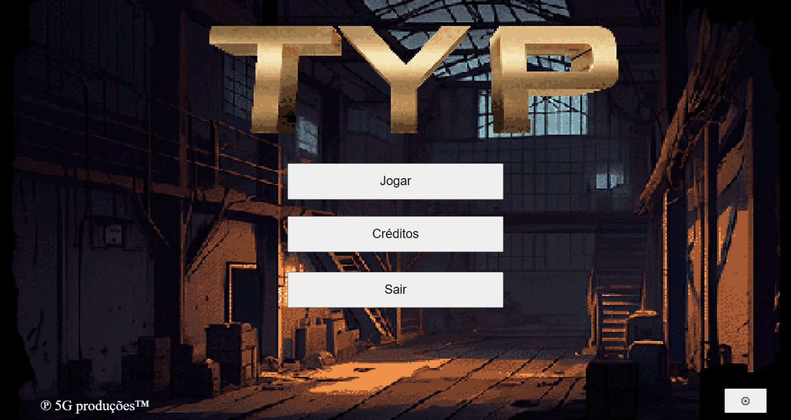
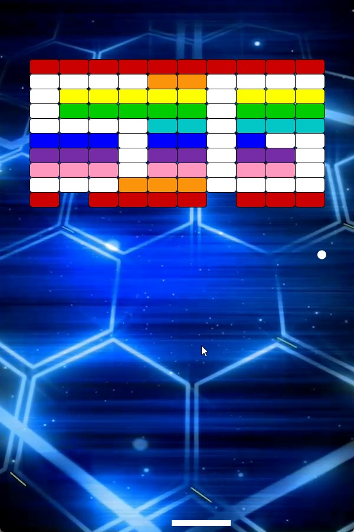
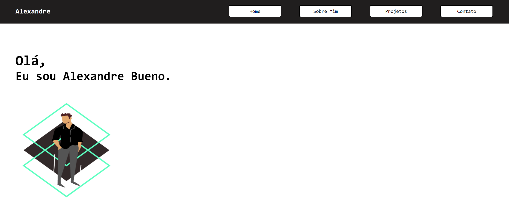
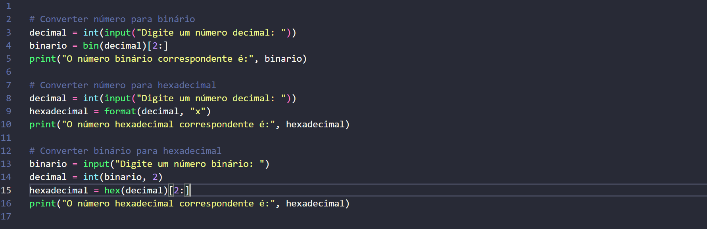
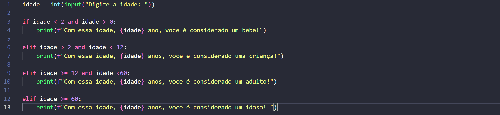
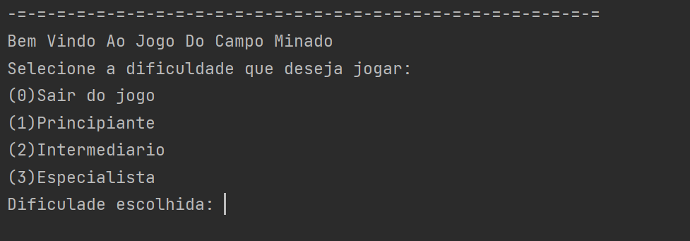

Estudei ate o 9º ano no Colégio Nossa Senhora Medianeira e depois fiz o ensino médio no Colégio Positivo.
Morei por 6 meses no Canada, na cidade de Nanaimo cursando High School onde cursei as matérias de Psychology, Computer Science, Business and E-Commerce and Entrepeneurship.
Atualmente estou no 3º periodo do curso de Ciência da Computação na PUCPR.
Minha meta é trabalhar fora do país ou para uma empresa muiltinacional, e mais tarde abrir minha própria empresa.
Adoro praticar esportes, conhecer pessoas novas e aprender sobre assuntos diversos.
Também tenho grande interesse pela área de finanças, empreendedorismo e IA.
Conheça alguns de meus projetos

Matéria: Experiência Criativa
Projeto 1 - Jogo
Objetivo: Criar um jogo na usando a ferramenta Construct.
O jogo deveria ser feito em equipe de ate 5 pessoas.
Eu e minha equipe criamos um jogo chamado T.Y.P no qual o jogador tinha a missão de ajudar um robo a derrotar alguns outros robos e chegar ao final das fases.
Nessa ferramenta, a programação é feita em blocos, o que facilitou o processo e nos ensinou muito sobre lógica de programaçào.

Matéria: Experiência Criativa
Projeto 2 - Criar um aplciativo multimidia com a IDE Processing
O aplicativo deveria conter som, fotografia, video e desenho.
Deveria ser um aplicativo interativo e ter um propósito específico.
Assim, eu e meu grupo decidimos criar um jogo com o mesmo estilo do jogo Arkanoid.
Nele, o jogador tem uma barrinha na parte de baixo da tela na qual rebateria a bola para cima e ia destruindo os blocos coloridos.
Para adicionar uma certa dificuldade, a cada vez que a bola toca em algo, sua velocidade aumenta.

Matéria: Experiência Criativa
Projeto 3 - Portfolio WEB
Objetivo: Criar o um portfolio web utilizando apenas Front End e hospeda-lo em um servidor.
Eu decidi criar um portfolio com uma temática mais minimalista, usando uma pequena paleta de cores com apenas uma cor destaque.
Neste portfolio inclui apenas algunas de meu projetos, visto que eu estou cursando 2periodos no momento e achei que o portfolio ficaria um pouco poluido.

Matéria: Fundamentos de Sistemas Ciberfísicos
Projeto 1 - Conversão de números para binário
Nessa matéria não tivemos nenhum projeto que envolvesse programação, visto que é uma matéria focada mais em hardware e teoria.
Porém, aprendemos sobre conversão de bases, como por exemplo, para hexadecimal e para binário.
Com isso, desenvolvi 3 códigos simples em Python que realizam essa conversão.

Matéria: Resolução de Problemas com Lógica Matemática
Projeto 1 - Escrever um programa em Python que ao ler a idade do usuário, diga se ele é um bebe, criança, adulto ou idoso
Se é um bebê (2 anos abaixo), uma criança (de 2 a 12 anos), um adulto (de 12 a 60 anos) ou um idoso (acima de 60 anos).
Com isso, desenvolvi um código bem simples para realizar a proposta da atividade.
Além disso, aprendemos sobre tabela verdade e proposições.

Matéria: Raciocínio Algorítmo
Projeto 1 - Criar um jogo de Campo Minado com Python com opção de dificuldade
No meu jogo existem 3 niveis de dificuldades diferentes, sendo elas facil com uma matriz 9x9, intermediario com matriz 16x16 e especialista com matriz 30x30.
Nesse jogo, o usuário tema opção de colocar se na linha(x) e coluna(y) há uma bomba ou casa livre.
Se ele acertar, o jogo continua, se errar, a bomba explode e ele perde o jogo.